Repaso de la Tanda 10S5
La batería de pruebas en 0 fallos de una pasada (tres veces seguidas y en 35 minutos), la descarga más ligera, las zonas de toque de 44 px y los retoques de la 10N12. Marca cada punto en tu teléfono cuando lo hayas comprobado (se guarda en este navegador).
0 · Antes de empezar ✅ Hecho — Prompt guardado, Design al día (Billete Reservas B1-B4, P1-P3), nota de estado cada 30 minutos de principio a finLa nota sube sola desde un bucle en segundo plano. No se apaga el PC. Dónde: No es de móvil. 1 · Respuestas a la 10S4 ✅ Hecho — El «Me gusta» de 30 px, con zona de 44 × 44También la píldora «lo recomiendan» de la ficha de restaurante. Dónde: EXPLORAR, tarjetas de restaurantes y baños. 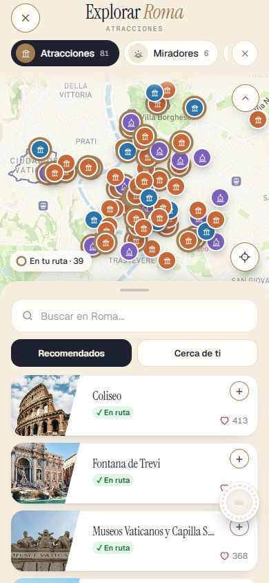
✅ Hecho — «Añadir parada» y AttractionsFinder buscan primero en nuestros sitios y debajo «Otros sitios» del mapa; la ciudad de salida sigue con el mapaSolo se ve en un destino sin catálogo propio: en Roma, «Añadir parada» ya era la pantalla de nuestros sitios. Dónde: DÍAS, día de un destino sin catálogo, + Añadir parada, «coliseo». 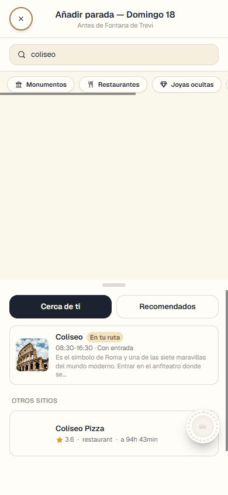
✅ Hecho — Un sitio con entrada dos veces en la ruta: se deja añadir y la entrada sale reservada en las dos paradas«Quitar solo de la ruta» una de las dos deja la otra reservada. Dónde: DÍAS y RESERVAS > Entradas y Free Tour. 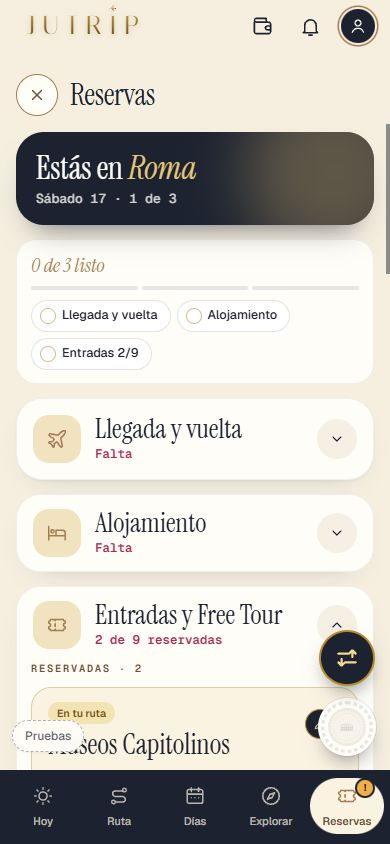
✅ Hecho — Botones flotantes sin pisarse nunca y sin dejar contenido debajo (regla nueva)Causa del borde de «Extras» tapado: el hueco era un número fijo y no contaba la barra de abajo del iPhone. No he medido una a una las fichas de parada, comida y llegada/vuelta, ni PantallaAlojamiento (mapa a pantalla completa). Dónde: Presupuesto, RESERVAS, DÍAS y EXPLORAR, bajar hasta el final. 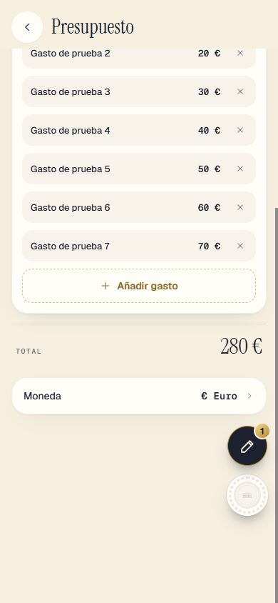
2 · Retoques pequeños ✅ Hecho — Presupuesto: «Vuelo a Roma» (tren, autobús y barco igual)En coche sigue «Ida a Roma». Dónde: Presupuesto, línea del transporte. ⚠️ A medias — Fechas enteras en listas y tarjetas («Viernes 27»)Hechas en presupuesto, RESERVAS, hojas de vuelo y cuenta atrás. HOY, las pills de fecha de las hojas de parada y DateField siguen con el formato corto a propósito: dime si también. Dónde: Presupuesto, RESERVAS, hoja del vuelo. ✅ Hecho — Los días de elegir a todo el ancho, a partes iguales, en dos filas si no cabenProbado con 3 y con 7 días a 375 y 390 px. Dónde: RESERVAS > Añadir otra reserva > Seguir; entradas, Free Tour, excursiones. 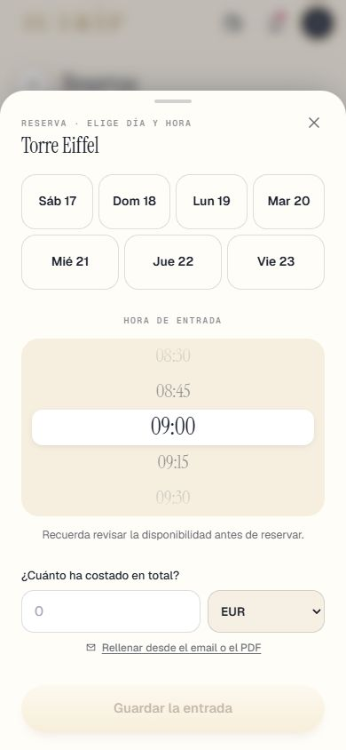
✅ Hecho — «Recuerda revisar la disponibilidad antes de reservar.» en la reserva escrita a manoEntradas y Free Tour conservan «…antes de añadirlo a tu ruta.». Dónde: RESERVAS > Añadir otra reserva con algo que no tenemos. 3 · «Propón un sitio» ✅ Hecho — El texto con «aquí» subrayado (P1), la hoja con el nombre ya escrito (P2) y el «Gracias» (P3)Sin Design al lado: las piezas son .dc.html. Dónde: RESERVAS > Añadir otra reserva > «Torre Eiffel». 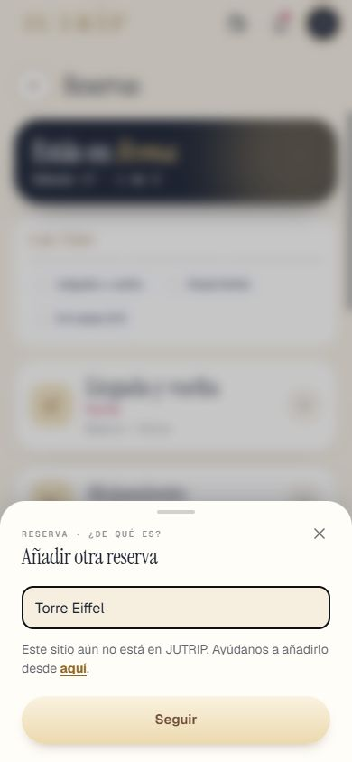
⚠️ A medias — Lo enviado se guarda en el servidor (tabla nueva, migración 0069, COMPROBAR_0069.sql); la hoja se abre desde cualquier sitioProbado con Express y un servicio de mentira y la migración con PGlite. Hasta que apliques la 0069 solo queda la línea [propon-sitio] en el registro del servidor. Consulta: select creado, destino, nombre, comentario, origen from public.propuestas_de_sitio order by creado desc limit 50; Dónde: SQL editor: COMPROBAR_0069.sql («FALTA» → «Aplicada»). 4 · El billete en RESERVAS ✅ Hecho — B1: [Añadir tarjeta de embarque] / [Añadir tu billete], «Desde el PDF, una foto o una captura.», «Eliminar vuelo» al final a la derechaEn esta captura el botón de logros tapa un poco «Eliminar vuelo». Dónde: RESERVAS > Llegada y vuelta (toca la cabecera si está en «Listo»). 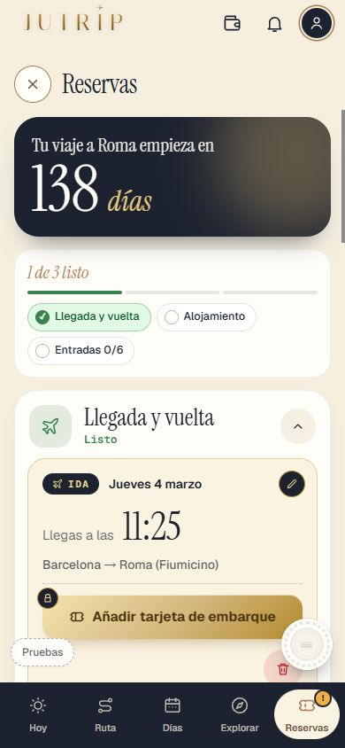
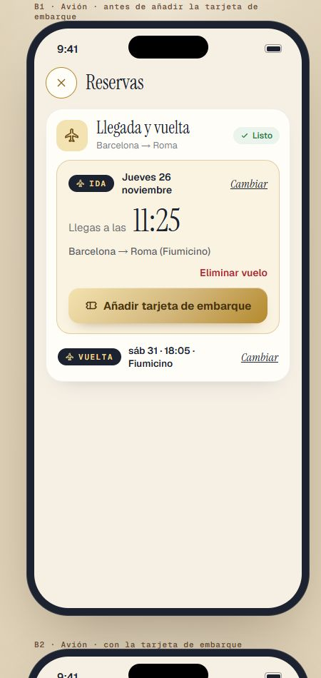
✅ Hecho — Añadir PDF, foto o captura: la app lee y rellena (vuelo o tren, compañía, localizador, horas, aeropuertos, terminal, asiento, coche); la duración la calcula la app; se puede cambiar todo a manoProbado con ejemplos inventados y las respuestas guardadas; con Claude de verdad lo pasó M una vez. Sin servidor, solo lo que lleva el código. Dónde: RESERVAS > Añadir tarjeta de embarque > elegir archivo. 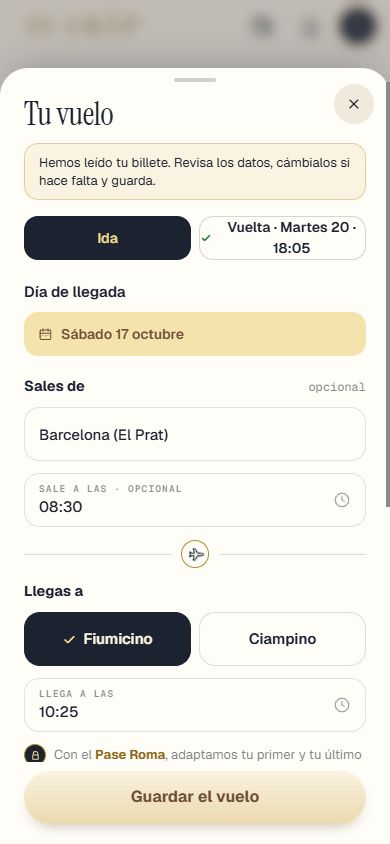
✅ Hecho — B2 y B3: las dos horas grandes, trayecto, datos en su fila, código en pequeño «Toca para ampliar»; B4 a pantalla completaDónde: RESERVAS con billete guardado; toca el código. 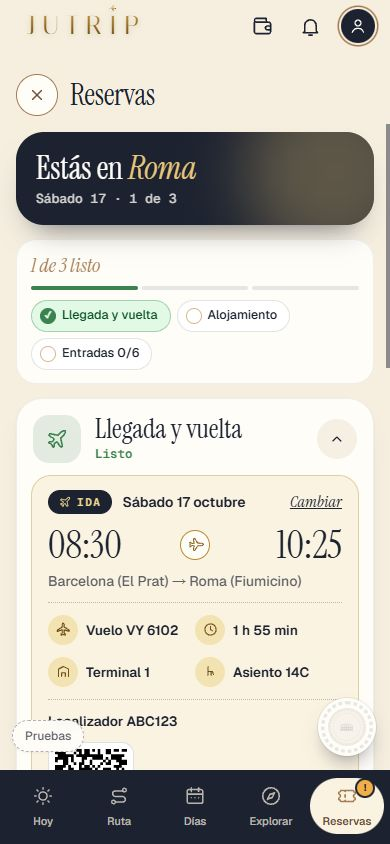
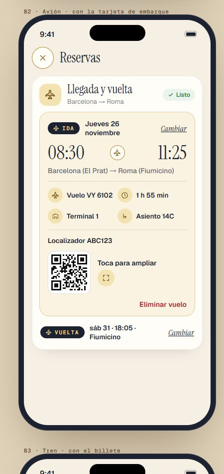
⚠️ A medias — Privado (cada uno ve solo el suyo) y sin internetSe guarda solo en el móvil de quien lo pone (localStorage por viaje y dueño), sin servidor: se ve sin conexión, pero no en otro móvil. El invitado aún no puede añadir el suyo desde su tarjeta. Para verlo en varios móviles haría falta la 0070 (archivo privado por persona): dime si la quieres. Dónde: Modo avión: abrir el billete. ✅ Hecho — Con pase, HOY lo enseña solo el día del viajeDónde: HOY con pase, día del viaje. 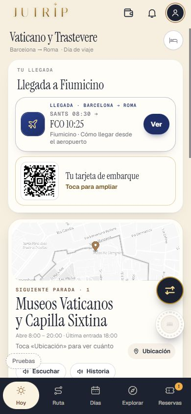
5 · El trayecto y «Sales de» ✅ Hecho — Trayecto «Barcelona → Roma (Fiumicino)» y «Roma (Ciampino) → Barcelona», con el de fuera entre paréntesis si lo pusoDónde: RESERVAS > Llegada y vuelta. ✅ Hecho — «Sales de» y «Llegas a» rellenos con la ciudad de la primera pantalla; un solo aeropuerto entre paréntesis («Barcelona (El Prat)»), varios solo la ciudad; hora de salida opcionalLista de aeropuertos: OurAirports (dominio público), 4.010 aeropuertos con código IATA y vuelos regulares, en un trozo aparte (~280 KB) que no entra en la descarga de la app; unas 110 ciudades con tabla corta propia. Dónde: RESERVAS > Cambiar en la ida o la vuelta. 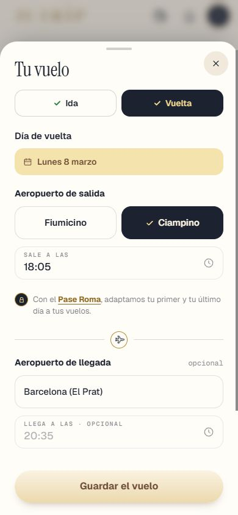
6 · La prueba ✅ Hecho — pruebaTanda10S5 (J, K, L, M) y las demás de lo tocado, más pruebaJutripMigración pendiente de aplicar: 0069 (Propón un sitio). 0070 no se ha creado. Dónde: No es de móvil. Todas las capturas
10s_aviso_375x667 10s_cama_dia_de_prueba 10s_lista_x_375_final 10s_lista_x_final 10s_lista_x_medio 10s_mis_viajes_fechas 10s_toque_ajustes_antes 10s_toque_ajustes_despues 10s_toque_cama_antes 10s_toque_cama_despues